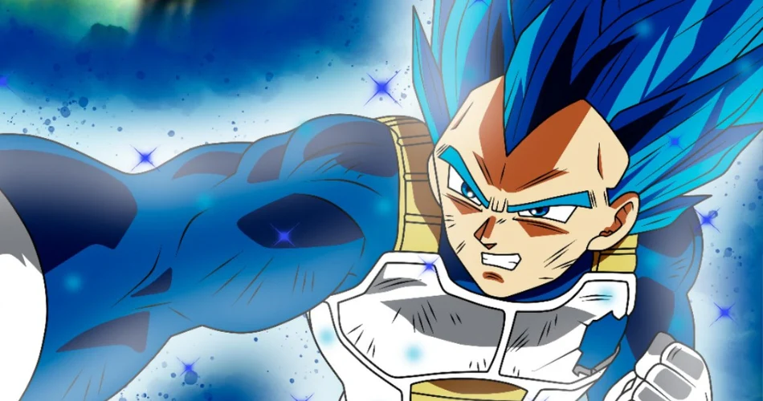
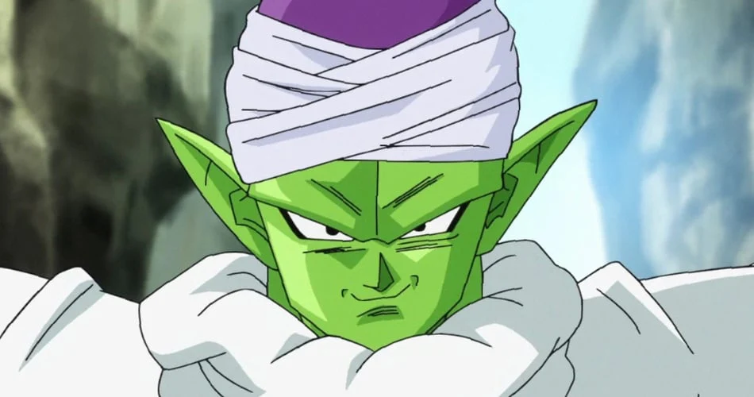
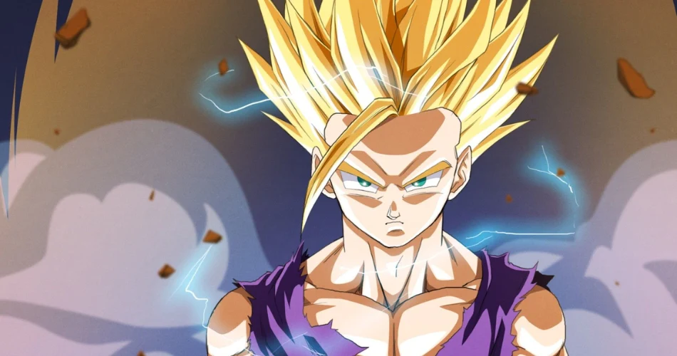
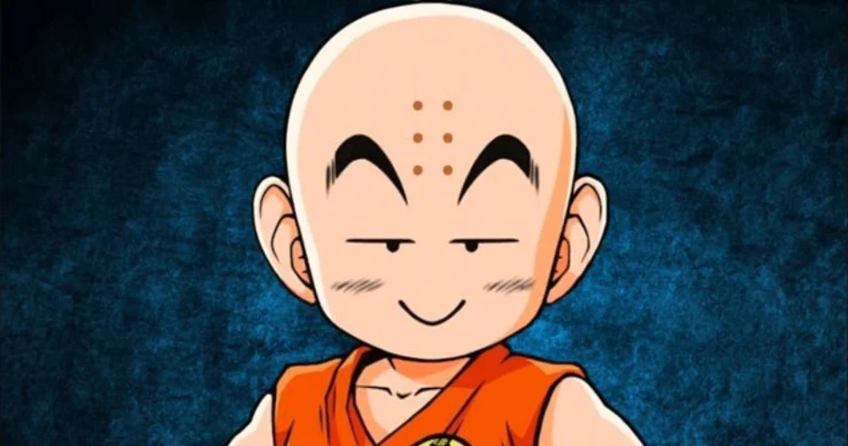
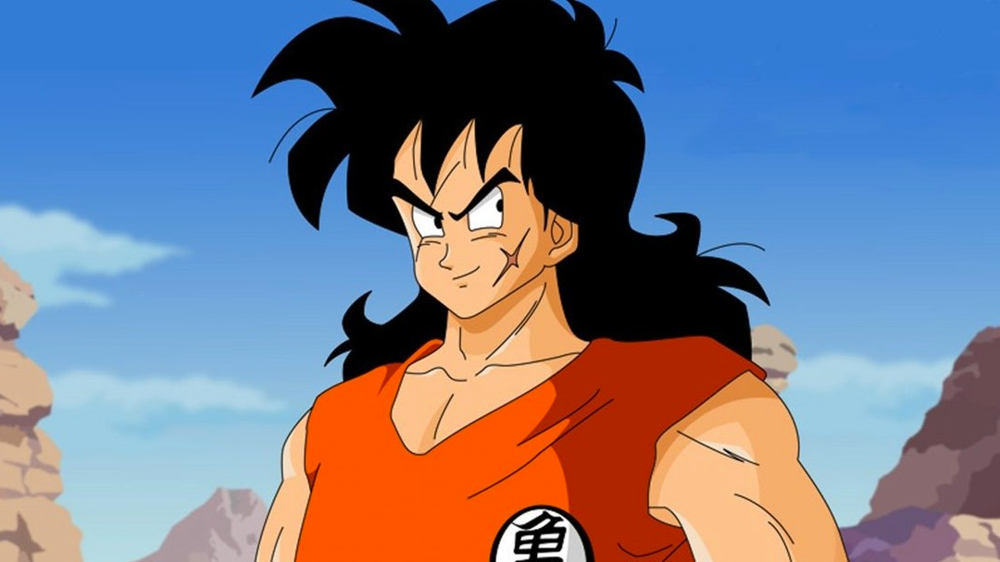
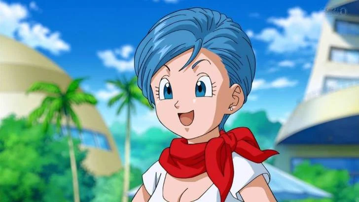
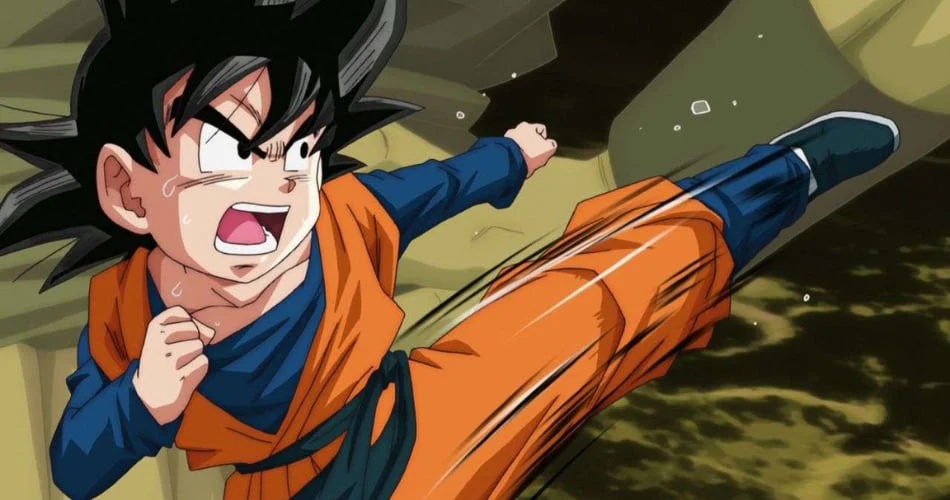

Tiểu sử của Songoku trong 7 viên ngọc rồng
Songoku hồi nhỏ là một người có tâm hồn thuần khiết, vui vẻ, khá ngây thơ nhưng cũng vô cùng dũng cảm, dám hy sinh bản thân mình để bảo vệ cho sự an toàn và hoà bình của Trái Đất.

Tiểu sử của Vegeta trong 7 viên ngọc rồng
Vegeta là hoàng tử của chủng tộc Saiyan sa ngã và là chồng của Bulma, cha của Trunks và Bulla, con trai cả của Vua Vegeta, cũng như là một trong những nhân vật chính của bộ truyện Dragon Ball.

Tiểu sử của Piccolo trong 7 viên ngọc rồng
Piccolo là một người Namekian và cũng là đứa con cuối cùng và là sự tái sinh của Vua Piccolo, sau này trở thành sự thống nhất của Người Namekian Vô Danh sau khi hợp nhất với Kami, tại thời điểm đó anh ta từng được Goku gọi là Kamiccolo

Tiểu sử của Gohan trong 7 viên ngọc rồng
Gohan là một người lai Saiyan và là một trong những nhân vật nổi bật nhất trong loạt truyện Dragon Ball. Anh là con trai cả của nhân vật chính Goku và vợ là Chi-Chi, anh trai của Goten, chồng của Videl và là cha của Pan.

Tiểu sử của Quy Lão trong 7 viên ngọc rồng
Quy lão tiên sinh là một ẩn sĩ đồi trụy và là bậc thầy võ thuật. Ông sống trên hòn đảo biệt lập của riêng mình có tên là Kame House, nơi ông có thể sẵn sàng đào tạo những học viên đến tận cửa nhà mình. Ông cũng là người sáng lập ra Kamehameha Wave.

Tiểu sử của Krillin trong 7 viên ngọc rồng
Krillin là một trong những võ sĩ mạnh mẽ và tài năng nhất trên Trái đất. Anh ấy can đảm, trung thành và tốt bụng. Krillin đã có một cuộc cạnh tranh ngắn ngủi với Goku khi họ lần đầu được Master Roshi huấn luyện, nhưng họ nhanh chóng trở thành bạn thân suốt đời.

Tiểu sử của Yamcha trong 7 viên ngọc rồng
Yamcha là cựu cướp sa mạc, Yamcha từng là kẻ thù của Goku, nhưng nhanh chóng cải tạo và trở thành bạn và đồng minh.

Tiểu sử của Bulma trong 7 viên ngọc rồng
Bulma là một kỹ sư, con gái thứ hai của người sáng lập Tập đoàn Capsule, Tiến sĩ Brief và vợ ông là Bikini, em gái của Tights và là người bạn đầu tiên của Goku.Sau khi hẹn hò với Yamcha khi họ còn là thiếu niên, cô đã kết hôn với Vegeta khi trưởng thành và sinh hai đứa con của họ, Trunks và Bulla.

Tiểu sử của Ma Bu trong 7 viên ngọc rồng
Ma Bu có nhiều dạng, tất cả đều được liên kết bên dưới. Tuy nhiên, mỗi dạng có tính cách và mục tiêu khác nhau, về cơ bản khiến chúng trở thành những cá thể riêng biệt.

Tiểu sử của Goten trong 7 viên ngọc rồng
Goten là con trai út của Goku và vợ Chi-Chi, khiến anh trở thành người lai giữa Saiyan và Earthling. Goten là em trai của Gohan và là bạn thân nhất của Trunks.